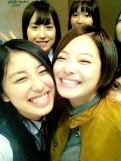
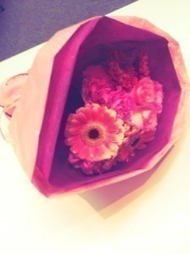

| 2012/11 19 Mon | 寂しい。大好き。頑張れ！(´>∀<｀)ゝ |
ちはるーむへようこそ＼(^^)／
昨日は似顔絵会、そしてカレンダーお渡し会、
すっごくすっごく楽しかった

 !
!
!
びっくりした!(о´∀`о)
わざわざ来てくれた皆さん本当にありがとう( ^ω^ )

カレンダーも似顔絵も大切にしてねー!＊
あ!あとね、
思ったよりも似顔絵が上手いことが発覚したよーヽ(｀･ω･´)ﾉ
あすかに
え、ちょ!上手じゃん!
って言われたもーーん

(p`･ω･´q)よっしゃー
あ!
昨日の乃木どこ見た?(>ω<)

春のメロディー流れたね(o^^o)
サイトでも期間限定で流れてるからチェックしてみてねー!
聞いた感想待ってます

そしてそして、
昨日はゆみこにとって最後の活動。

ゆみこにちゅーしようとしたらこんな顔された。笑
これこそ愛情ーーヾ(*･∀･*)ﾉﾞ
これみて分かる通りね、仲良しなんだよ(´>ω<｀)!
いじってるけどなんだかんだみんなゆみこのこと大好きで、
みんなの話を聞いてあげて、慰めてあげて、見守ってくれる。
そんな存在がいなくなっちゃうのがすごくさみしい...
最初の頃、一番上のお姉さんだしかっこいい系だし一匹狼タイプだし
仲良くなれるのかな、大丈夫なのかな、とか色々考えてて。
そうしたらゆみこが優しく話しかけてくれて。
ゆみことは同じ埼玉で帰りが一緒になることが多かったから
そのときにいっぱい話して打ち解けていった気がする。
ゆみこの考え方とかすごい大人で、すごいなーって感心したこといっぱいあって。
慰めてくれたこともいっぱいあって。
2人で愚痴を喋ったこともあって。
2人でDSをしながらみんなの顔を作ったこともあって。
2人で帰るその帰り道が、すごく大好きでした。
昨日も、実はあのあと一緒に帰ったんだー!♪
最後の最後までゆみこ独占(ω)
これからのこととか、
いままでのこととか、
いっぱい話してくれたゆみこは、
どこか寂しそうで、でもどこかスッキリした顔してて。
寂しいけど、ゆみこが頑張るって言ってるから応援したい!!
だってゆみこが大好きなんだもん!!
寂しい寂しい寂しい。
大好き大好き大好き!
頑張れ頑張れ頑張れ!!

笑顔のゆみこが、大好きです。
さよならじゃないよ!
またねだよ!
おうちに遊びおいで!って言われたから容赦無く押しかけるよ!笑
みんなで焼肉行こう!ゆみこのおごりで!笑
みんなの話聞いてあげる人必要だから聞いて慰めて守ってあげて!
ゆみこ。
本当にお疲れ様でした。

大好きです。
ありがとう。
ばいるんっ
るんるんっ
ちはるんっ
(´>∀<｀)ゝ
コメント(95)
2012/11/19 14:54